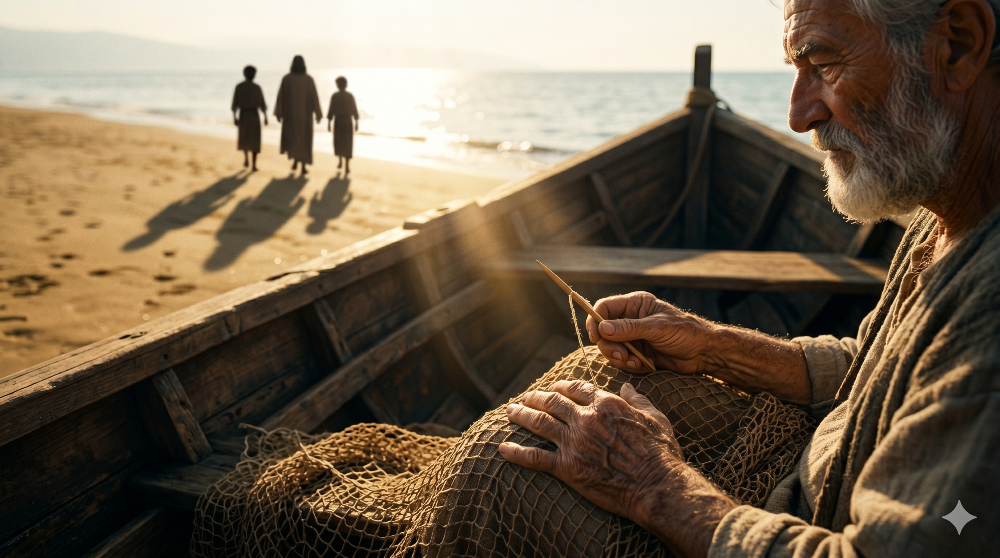

갈릴리 호숫가의 따뜻한 늦은 아침, 한 작은 어선 안에서 늙은 아버지 세베대와 그의 두 아들 — 야고보와 요한 — 이 무릎 위에 그물을 펼친 채 한 코 한 코 정성껏 깁고 있다. 호숫가의 모래 위로 한 분이 조용히 걸어오시며 그들 가까이에 멈춰 서신다. 그분의 한 마디가 떨어지는 순간, 두 형제의 손에서 바늘과 그물이 미끄러져 내리고, 그들의 발이 어선 너머 모래 위로 한 발자국 내딛어진다. 한 가정의 오래된 기다림과 한 분의 새로운 부르심이 한 그물 위에서 만나는 거룩한 한 아침.
조금 더 가시다가 세베대의 아들 야고보와 그의 동생 요한을 보시니 그들도 배에 있어 그물을 깁는데 곧 부르시니 그 아버지 세베대를 품꾼들과 함께 배에 버려 두고 예수를 따라 가니라 — 마가복음 1:19–20
마가복음의 한 구절은 두 줄로도 다 쓸 수 있을 만큼 짧습니다. 그러나 그 짧은 두 줄 안에 한 가정의 평생이 담겨 있고, 한 분의 부르심의 깊이가 담겨 있고, 두 청년의 일생을 영원히 다른 방향으로 돌려놓은 한 결단이 담겨 있습니다. 갈릴리 호숫가의 한 가정 — 아버지 세베대는 갈릴리에서 적지 않은 어업을 운영하고 있었습니다. 그의 어선에는 자기 두 아들 야고보와 요한뿐만 아니라 "품꾼들"(μισθωτοί, 미스도토이 — 임금을 받고 일하는 일꾼들)도 함께 일하고 있었습니다(막 1:20). 곧 그 가정은 한 가정의 작은 어업이 아니라, 여러 사람의 생계를 책임지는 한 어업의 사장집이었습니다. 두 아들에게 그 어선은 단순한 일자리가 아니었습니다. 그것은 아버지가 일생토록 손수 쌓아 올린 한 가정의 자랑이었고, 두 형제가 평생 이어받을 한 가업의 미래였습니다.
한 분이 호숫가를 지나가시며 그들에게 한 마디를 던지십니다 — "나를 따라오라"(막 1:17). 마가는 그 다음 한 장면을 담담하지만 엄숙하게 적습니다 — "곧 부르시니 그 아버지 세베대를 품꾼들과 함께 배에 버려 두고 예수를 따라 가니라"(막 1:20). "버려 두고"라는 한 단어가 무거이 가슴 안에 남습니다. 헬라어 "아피에미"(ἀφίημι)는 "남기다, 떠나다, 버려두다, 용서하다"라는 여러 의미를 지닌 한 단어입니다. 두 청년이 자기 아버지를 그 어선 안에 그대로 두고 일어난 그 한 발자국은, 단순한 직업의 변화가 아니라 한 정체성의 전환이었습니다. 그들은 더 이상 "세베대의 아들들"이 아니라, "그분을 따라가는 자들"이 된 것입니다. 그러나 한 가지 — 마가는 잔인할 만큼 짧게 "그 아버지 세베대를 … 배에 버려 두고"라 적었지만, 사실 그 어선 위에 남겨진 한 늙은 아버지의 마음 또한 그 부르심의 한 부분이었습니다. 한 가정에서 한 사람이 그분을 따라가는 일은, 그 가정의 모두를 동시에 흔드는 한 사건입니다.

두 청년이 떠난 빈 어선 안, 늙은 아버지 세베대의 거친 손 위에 미완성의 그물이 그대로 놓여 있다. 그의 눈은 아들들이 떠난 모래사장 쪽을 바라보고, 그 시선의 끝에 두 작은 그림자가 한 분의 그림자 곁으로 길게 늘어져 있다. 한 아버지의 침묵 안에 한 가정의 거룩한 동참이 새겨지는 한 아침의 잔잔한 호수.
두 형제가 자기 아버지의 어선을 떠난 한 장면은 우리에게 한 가지 정직한 질문을 던집니다 — "당신은 한 분의 부르심을 따라가기 위해 무엇을 한 어선에 두고 일어날 수 있겠는가." 그 어선은 사람마다 다릅니다. 누구에게는 안정된 직장이고, 누구에게는 익숙한 관계이고, 누구에게는 평생 쌓아 올린 한 자존심이고, 누구에게는 자기 가정의 기대일 수도 있습니다. 한 분의 부르심은 결코 "어선 자체가 악하다"고 말씀하지 않으십니다. 어선은 거룩한 한 생계의 자리이고, 한 가정의 자랑이며, 한 일생의 정성이 담긴 자리입니다. 그러나 그분이 한 사람을 부르실 때, 그 어선보다 그분의 한 마디가 더 무거워야 한다는 한 가지를 가르치십니다. 그러므로 오늘 당신의 어선이 무엇이든, 그것을 미워하지 마십시오. 다만 그것보다 한 분의 한 마디를 한 그램 더 무겁게 들어 올리십시오. 그 한 그램의 무게가 당신의 일생을 영원히 다른 방향으로 돌려놓습니다.
또 한 가지 — 마가가 적은 한 마디 "품꾼들과 함께"(막 1:20)는 한 가지 위로의 진리를 우리에게 알려 줍니다. 두 형제가 떠난 어선은 결코 빈 어선이 되지 않았습니다. 그곳에는 아버지 세베대와 함께 품꾼들이 남아 있었습니다. 그러므로 한 분이 한 사람을 부르실 때, 그분은 그가 책임지고 있던 자리들이 무너지도록 부르시지 않습니다. 그분은 한 사람의 떠남이 다른 사람의 자리를 비우는 일이 되지 않게 하시는 분입니다. 한 가정 안에서 한 사람이 그분을 따라가는 일이 그 가정의 무너짐이 아니라 그 가정의 또 다른 거룩한 동참이 되는 까닭은, 한 분이 그 가정 전체를 자기 손안에 부드럽게 안고 계시기 때문입니다. 오늘 당신이 한 분의 부르심을 따라가면서도 두고 가는 사람들에 대한 무거운 마음을 품고 있다면, 그분이 그 두고 간 자리에도 자기 방식대로 한 손길을 내려놓고 계심을 믿으십시오.
당신의 어선을 미워하지 마십시오 — 다만 그분의 한 마디를 한 그램 더 무겁게 들어 올리십시오.
사람을 두고 떠나는 자리는, 한 분이 그 두고 간 자리도 함께 안으시는 자리입니다.
오늘, 당신의 그물에서 손을 떼고 한 분의 그림자 곁으로 한 발자국 내디디십시오.